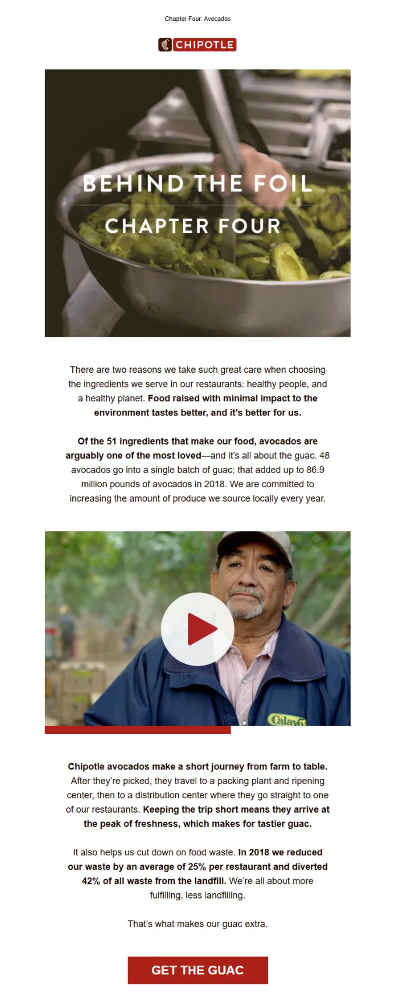
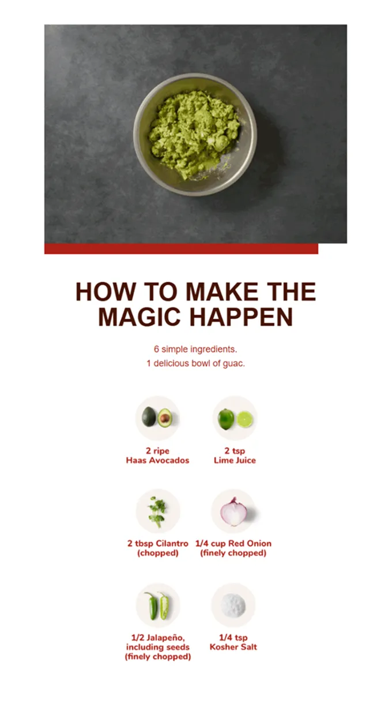
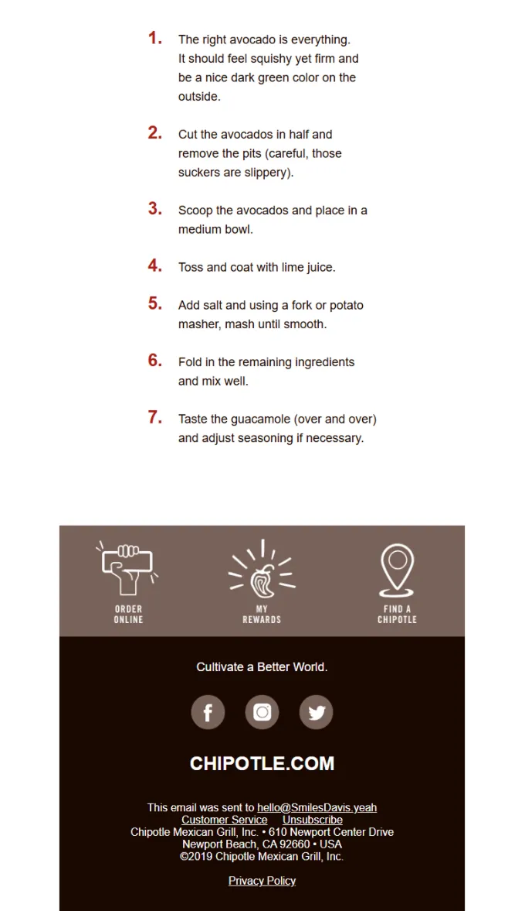

What makes a simple email feel irresistible?
In this episode of Feedback Friday, Matthew Smith and Matt Helbig break down a mouthwatering Chipotle campaign that proves less really can be more. From playful GIFs and smart hierarchy to branded color accents and in-email recipes, they explore how a clean layout and creative visuals can turn a simple message into something you actually crave.
TL;DR
- Using motion and minimalism to grab attention
- Why visual hierarchy matters for readability and engagement
- How food brands can balance fun design with functionality
- Building appetite and action through smart storytelling
Matthew Smith: Yoyoyo, happy Friday, Matt Helbig.
Matt Helbig: What’s up, Matthew Smith? How’s it going?
Matthew Smith: Just cranking, man. Busy, busy as all get out, but having fun. Heading to the Grand Tetons with my kids soon, so that’s going to be fun.
Matt Helbig: Oh, very nice. Maybe they’ll have a Chipotle there.
Matthew Smith: Oh my God, I love Chipotle. I’m pretty into this. This is a great example of a fantastic GIF. It’s supporting imagery that just feels fun, right? If they had used a still photo, it wouldn’t be nearly as meaningful. I think they did a great job with that. I love it. Also, holy cow, that’s a lot of avocados, and it makes me hungry. I think they’ve done a nice job here with a lot of different elements. The one thing I notice right away is that this text gets very close to being too long for centered alignment. It’s nice and big, which helps, but that could become problematic. If it were me, I’d find a way to make it left-aligned.
Matt Helbig: The hierarchy is a little strange, too. I mean, I guess that GIF text overlay is sort of the headline, but to me, it doesn’t really stand out as one.
Matthew Smith: I do like how clean and simple things are. A simple email can be very effective. In my experience and opinion, most people tend to overdo it, so it’s refreshing to see something straightforward here. If they had used left-aligned text, I think they could still keep it within a narrower inner column, without stretching all the way to the edge. That would work pretty well. Another thing I thought was clever is this video callout. Using the video symbol for play makes sense, but adding this little bar underneath was a nice touch. The video player doesn’t actually look like this, but it makes you want to click. It’s more enticing, and I find that appealing.
Matt Helbig: Yeah, it’s like a hack. I’ve never seen that before, but I’d be interested in seeing how it converts. That’s cool.
Matthew Smith: Yeah, it’s a nice visual hack. They’re also using the red from their brand throughout — in the video section and on the CTA — and I think that’s strong. “Yes, I want the guac.” Again, they’re using the same callout style. I’m curious — they’re doing something slightly different here than in the previous section. I’m not sure why. This one feels like it’s further along in the video; there’s a white line, and now there’s no play button. Maybe they’re testing which one gets more clicks. That’s interesting. Then they lead me quickly down the page to this recipe, or more accurately, a set of recipes. It just feels great to have that insight. The images look good — the picture of the ingredients is obviously an image, but the text doesn’t need to be. That could have been done differently, but it’s fine.
On the whole, I think it’s going great. I really like this part: “Six simple ingredients. One delicious bowl of guac.” That tells me right away if I’m interested. Also, notice how the text is short; instead of putting the bulleted list all the way to the edges, they tightened the column. That makes the text easier to read quickly, and I think it works super well. I thought that was a great job. And what a great footer — “Hang Now,” “Order Online,” “Rewards,” “Find a Chipotle,” “Social.” Just a nice, simple footer without too much legal text. I’m into it.
Matt Helbig: The numbered list is what really stood out to me. We rarely see that in an email. I guess a recipe is one of the main use cases for it. It’s a really cool idea to include it directly in the email instead of linking out to a landing page. It’s easy to follow if you want to make some guac yourself.
Matthew Smith: Yep. It also looks really good on mobile.
Matt Helbig: I’m impressed with that. I like that these GIFs aren’t full video; they’re more like a few image steps, which works much better in email since it keeps file sizes smaller. This one is probably five, six, seven frames, and you still get the full effect — you know it’s guacamole. Instead of a full video that’s ten megabytes or more, these lightweight GIFs are smarter. Even at the top, they stepped the email into multiple images, so you probably don’t lose much in the first frame, even in Outlook.
Matthew Smith: Good job, Chipotle. Looking forward to the next one.